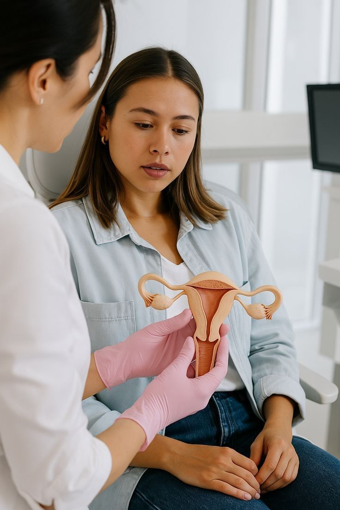
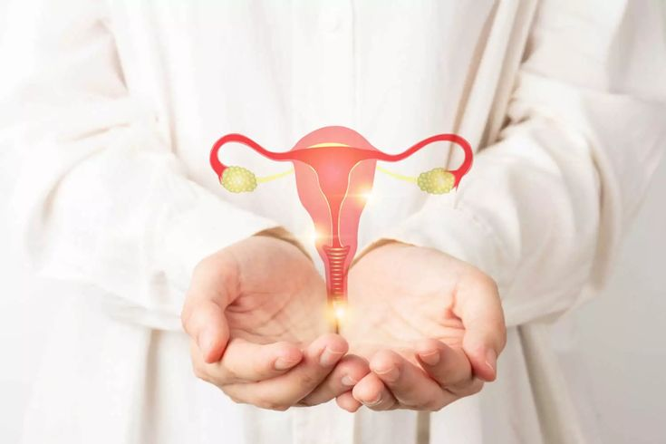

OVULATION INDUCTION
Medical support to stimulate ovulation and improve chances of natural conception.
Advanced maternity & gynecology infrastructure
24/7 obstetric emergency & specialist care
Seamless care from adolescence to motherhood
Medical support to stimulate ovulation and improve chances of natural conception.
Advanced maternity & gynecology infrastructure
24/7 obstetric emergency & specialist care
Seamless care from adolescence to motherhood

Difficulty in ovulation is a common reason for infertility in women At Birthstories by Starlings, we offer specialised ovulation induction treatment in Hyderabad, designed to help women ovulate regularly and improve the chances of natural pregnancy.
Our fertility specialists carefully assess each case and provide personalised treatment using safe and proven medical protocols.
Ovulation induction is a medical treatment that uses medications to stimulate the ovaries to release eggs regularly. It is commonly recommended for women who experience irregular or absent ovulation, including those with hormonal imbalances or PCOS.
With proper monitoring and expert guidance, ovulation induction can significantly improve fertility outcomes.

Ovulation induction may be recommended for women who:
Our doctors evaluate each case thoroughly before recommending treatment.
At Birthstories, fertility care is delivered with precision, empathy, and hope.
Evaluation of hormonal levels, cycle patterns, and reproductive health.
Carefully monitored treatment using safe fertility medications.
Ultrasound tracking of follicle growth to time ovulation accurately.
Regular monitoring to ensure safety and effectiveness.
Counselling on timing and lifestyle factors to support conception.
Yes, when properly monitored by specialists, it is safe and effective.
Treatment duration varies based on individual response and cycles.
Yes, it is commonly used for women with PCOS.
While it improves chances, pregnancy depends on multiple factors.
Yes, regular monitoring is essential for safety and success.

Birthstories by Starlings offers expert ovulation induction treatment in Hyderabad, helping women with ovulatory disorders improve fertility and move closer to natural conception through safe, personalised medical care.
Read the latest Blogs about Starlings Childrens & Birthstoriess Hospital well as medical news around the world.
View All Blogs Post →